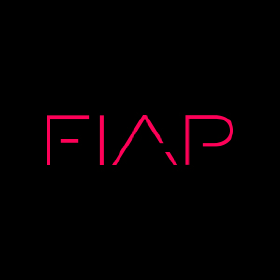

Informação duplicada
Os mesmos dados aparecem em lugares diferentes, com versões diferentes.
// infraestrutura digital sob medida
Eu projeto e implemento a infraestrutura digital que o seu negócio precisa para operar: CRM, automações, assistentes de IA, sites e integrações. No lugar da complexidade, um sistema simples e confiável.
~ eliseu build --negócio "serviço premium"
→ analisando operação atual...
✓ tudo num sistema só. nada se perde.
// o caos operacional
Planilhas falham, dados ficam espalhados, o WhatsApp vira a central da empresa e cada oportunidade depende de alguém lembrar o próximo passo.
Os mesmos dados aparecem em lugares diferentes, com versões diferentes.
Pedidos, dúvidas e follow-ups misturados no mesmo fluxo de mensagens.
Confirmações, lembretes e repasses dependem de ações repetidas.
O histórico não acompanha o cliente até a entrega.
// a virada de chave
O ponto não é adicionar mais uma plataforma. É desenhar uma operação digital em que cada entrada, decisão e entrega segue um fluxo claro.
// resultado
// engenharia pragmatica
Cada projeto começa comigo entendendo a operação real. Depois vem arquitetura, construção, implantação e entrega com documentação suficiente para o sistema continuar funcionando.
Eu mapeio canais, gargalos, decisões e rotinas que seguram o crescimento.
Eu desenho o sistema, defino ferramentas, integrações e prioridades.
Eu implemento site, CRM, automações, IA e interfaces necessárias.
Eu conecto a rotina da equipe, testo cenários e ajusto o uso real.
Você recebe o sistema pronto, documentado e com próximos caminhos claros.
// banco de transformacoes
Três projetos como ponto de partida. O card mostra o essencial agora; os detalhes entram depois com calma.
// quem sou eu
Foi isso que me levou da engenharia de software para o desenvolvimento de soluções digitais para empresas reais.
Hoje ajudo negócios de serviço a transformar processos manuais, informações espalhadas e ferramentas desconectadas em sistemas simples, organizados e fáceis de operar.
Não acredito em soluções genéricas.
Cada empresa funciona de um jeito diferente e, por isso, cada sistema também deveria funcionar.
Meu trabalho é entender o problema, projetar a solução e construir a tecnologia necessária para fazê-la funcionar.
“A simplicidade é a sofisticação máxima.”
Leonardo da Vinci
formação e repertório técnico// proximo passo
Em uma conversa de 30 minutos, eu entendo onde a operação trava e quais sistemas precisam conversar para o crescimento ficar mais simples.